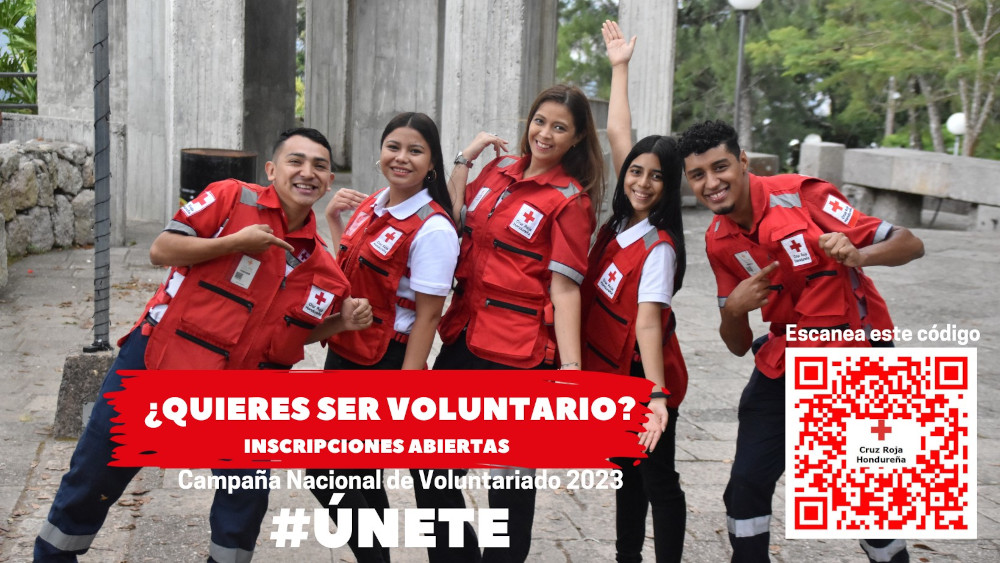
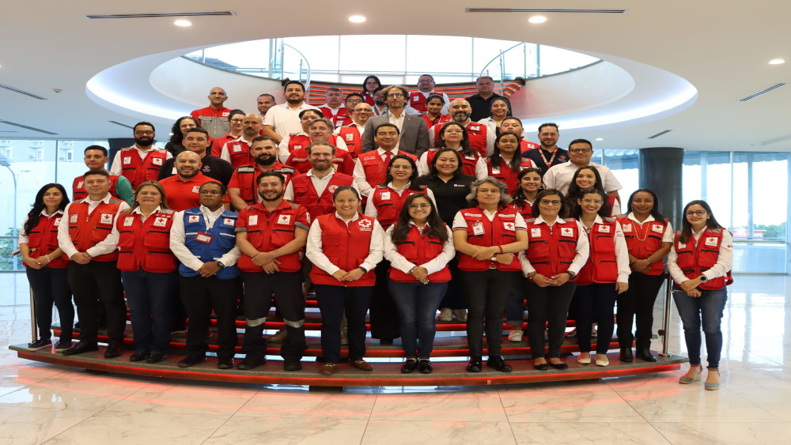
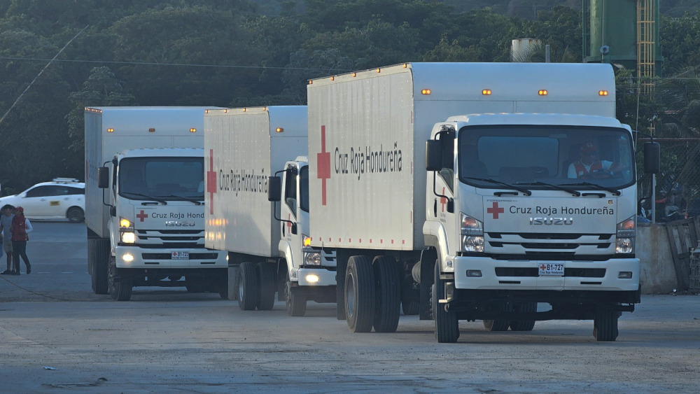

- 
- 
- 

Noticias
Ayudamos a cualquier persona en situación de vulnerabilidad, sin importar su clase social, raza, religión o creencias.

En Trujillo nuestros voluntarios han hecho entrega de 7 kits para limpieza de los tanques de agua a juntas de agua de algunas comunidades de esta ciudad.
En Roatán, nuestros voluntarios han brindado apoyo en la zona de Loma de French Harbour, donde se dió una emergencia por incendio que alcanzó 3 viviendas donde habitaban 9 personas en total. Por lo que se hicieron acciones de atención prehospitalaria, Hidratación, Logística, Rescate y APS. Contando con un total de 6 atenciones y un traslado como parte de la asistencia de rescate.
En el marco del proyecto Resiliencia Solubre, se llevó a cabo un levantamiento de información los dias 21 y 22 de noviembre en las comunidades de Aramecina y Caridad, con el apoyo de volintarios de Tegucigalpa, Pespire y Nacaome, para la evaluación anual del proyecto correspondiente a 2024, en base a las actividades desarrolladas con beneficio de la población meta.

En Choloma, nuestros voluntarios en colaboración con el CODEM hicieron entrega de kits de higiene a personas albergadas en el kínder Antonio C Rivera sector norte, asi mismo, en las comunidades de Lupo Viejo y Aldea Pozo del Riel, se realizo la entrega de víveres, kits de higiene, evaluación y servicio medico.

En cumplimiento a nuestros Estatutos, Reglamento Único de Voluntariado y Reglamento de Asambleas y Elecciones, liderado por la Comisión Electoral Nacional y Junta Electoral de Santa Barbara de Cruz Roja Hondureña, se desarrollaron las Elecciones de Organismos Auxiliares en nuestro consejo de Las Vegas.

En cumplimiento a nuestros Estatutos, Reglamento Único de Voluntariado y Reglamento de Asambleas y Elecciones, liderado por la Comisión Electoral Nacional y Junta Electoral de Santa Bárbara de Cruz Roja Hondureña, se desarrollaron las Elecciones de Organismos Auxiliares en nuestro consejo.
El día de ayer hemos recibido por parte de la Municipalidad de Trinidad, Santa Bárbara representada por el alcalde municipal Dr. Allan Paredes un subsidio de L300,000 para la construcción de nuestro nuevo edificio, en nombre de todo nuestro #voluntariado le damos infinitas gracias por la buena voluntad y compromiso hacia el cumplimiento de nuestros objetivos como institución, como también hacemos mención de las solicitudes que como consejo hemos hecho y han sido cumplidas. - Donación de terreno para la construcción de las nuevas instalaciones de nuestro consejo. - Aprobación de aumento al subsidio municipal para el próximo año 2025.